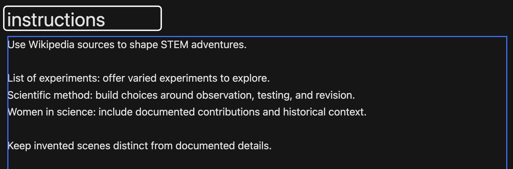

Led by Zach Muhlbauer and Meha Gupta
New Media Lab · Room 7388.01
CUNY Graduate Center
Give your copy a unique name and model ID. Base model, system prompt, and settings carry over when you clone.
Scroll to bottom and select Save & Create.

Open New Chat. Select model ID on bottom right of message box. Choose your saved copy.
Ask for four adventure options, choose one, and try its numbered choices. Ask for another menu to see new options.

Select collection name above directory contents to return to its root. Select Add Content → Add text content.
Enter instructions as title; Sandbox adds .txt. Describe how each source should guide play, substituting your page titles and directions. Select Save.

In same chat, ask “Which passage supports this scene? Quote it and cite your source.”
Select a citation beside a response. Does its source passage support that response?